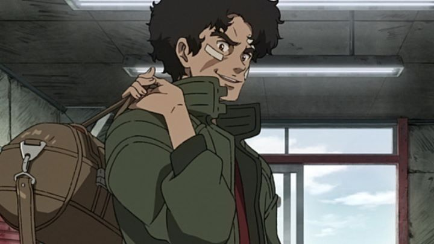

"Megalobox" is a 2018 anime produced for the 50th anniversary of "Ashita no Joe," a boxing manga and anime also known as "Tomorrow's Joe" in English. As a sports story about an underdog fighting his way to the top, the original work holds up well (I've only seen the 1980's recap film to verify that). But a lot of older work can benefit from a modern reimagining. This is the case with "Megalobox," which has just enough callbacks (in character names, personalities and events) to make older fans smile, but fresh enough as a standalone series for newcomers to enjoy just as thoroughly. Set sometime in the future, "Megalobox" has one major stylistic change: star boxers use exo-suits attached to their backs to make their punches more powerful. It looks like an adaptation of the old "Rock-'em-Sock-'em-Robots" toy. This also gives richer boxers an edge in the ring, equiping their "Gear" with stronger and ligher metals, and even with A.I. sensors to better react without the fighter's input. Enter "Junk Dog" (for some reason, spelled "Jnk.Dog" on the English Bluray box, but not in the television series). He has no other name to go by, and isn't a formal citizen, so he's forced to fight in underground rings, reluctantly throwing matches on the orders of his Manager, Nanbu, to earn a living with a mob that controls the gambling scene. Sick and tired of losing matches he could win in the first round, and sick of using the cheapest Gear they can find, his life changes when he meets Yuri, the boxing champ of the world, and spokesperson for the Shirato Corporation, lead by his manager (and possible love interest) Yukiko Shirato. Junk Dog and Yuri immediately feel a connection: they want to fight each other. It lights a fire, and Junk Dog insists for Nanbu to help him enter "Megalonia," the worldwide tournament to crown the champ, a front to help sell Shirato's own leading tech for fighter Gear. Nanbu has debts to pay, and is under tight leash by a mob boss who wouldn't hesitate to take his pound of flesh, but somehow they convince their way to a fake passport and an entry to the tournament. Still at a financial disadvantage, the newly named "Joe" takes a big gamble: to fight without the show's trademark Gear, relying solely on his own skills and Nanbu's wisdom as an old boxing coach. If they can fight their way to the top four out of hundreds of applicants, "Gearless-Joe" might get his opportunity to fight his rival, as well as a winning prize to take him and Nanbu out of the dirt they lived in for so long.The underground mob subplot and futuristic setting makes 'Megalobox" feel like the original "Ashita no Joe" fused with the 2009 anime film "Redline." That sounds like a winning combination if there ever was one. But "Megalobox" struggles a bit visually, both for being a television series with a limited budget, and for purposely attempting to recreate a look from an older pre-2000 anime. Character designs are distinct, and backgrounds well realized, but never quite goes the extra mile in detail or style to amaze me, and muddy color-palettes don't do justice with the setting. Animation is limited throughout to only showing what's necessary. Even in action-fueled boxing matches, frame movement and choreography isn't particularly impressive compared to other anime. The most impressive scenes are when the show pauses for a moment in the ring, with a still frame of the two boxers, and particle effects for the sweat and blood in the air, as the camera slowly zooms out. Actually, the animation does pick up a bit in quality in the final few episodes, making the final fights all the more exciting to watch. The biggest and most controversal design choice was the purposely blur the entire frame, as if my 1080p Bluray was a DVD of a show from the early 2000's. It's rare, but not unheard of for an anime production to bet so much on such a big decision (see 2003's "Kino's Journey"), and it almost never works well. Personally, I'm disappointed in the decision, and the result makes owning a Bluray over a cheaper DVD meaningless, except for the extra feature-length interviews with the Japanese production team exclusive to the Bluray. Audio is where the show punches above it's weight. The soundtrack is filled with beat-box anthems you might hear in the lead-up to a real match, and has rap songs both as the ending theme and as insert songs during the show, by female artists NakamuraEmi and COMA-CHI. Aside from the cool soundtrack, the audio design gets a chance to shine in such an action-packed show: you hear every punch and step in the ring with great impact. "Megalobox" is best heard with headphones to get the most out of it. The English dub and writing do a great job: for the first half of the series, nearly every other line was written and delivered in a way that it could be used with great effectiveness in a trailer or as a tagline. It might be cheesy, but it kept me hyped with very episode. At the core is the story, and it doesn't disappoint. Sports anime can be surprisingly effective in giving us a sense of motivation, not just from the lead, but from all the players on the field, forcing us to second-guess who we think will win, or who we want to win. The extra drama from conflicting motivations from characters like Nanbu help make it all the more juicy. You already probably know how the show ends, but the series keeps you on your toes, eager to watch the next episode. It isn't easy to watch: Joe gets beat to a pulp in most of his matches, and we have to sit through several minutes of it in each episode. But that's further proof that "Megalobox" suceeds in portraying the drama and excitement of a real boxing fight. It didn't quite shake up the world for me, but it's an admirable celebration of the source material, while still finding its own path in a younger audience.
- "Ani" More reviews can be found at : https://2danicritic.github.io/ Previous review: review_Mazinger_Z_-_Infinity Next review: review_Melody_Time